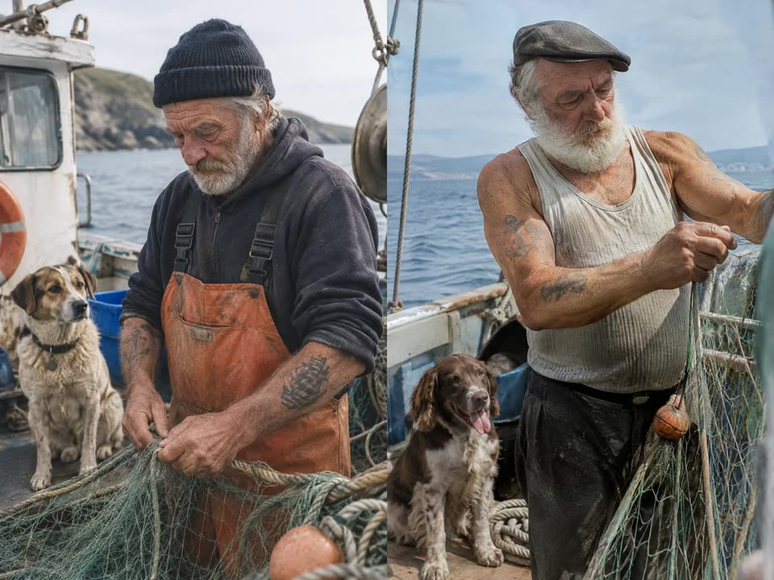

GPT Image 2.6 official candid realism: an elderly sailor mending a net on a small fishing boat, shot like 35 mm film, no retouching

OpenAI's reference for photoreal people. The page's rule is to describe a photograph through subject, framing, light and texture. The prompt does that line by line: weathered skin with visible wrinkles, pores and sun texture; faded tattoos; a dog on deck for a natural action; "Shot like a 35mm film photograph, medium close-up at eye level, using a 50mm lens"; soft coastal daylight with subtle film grain; and an explicit anti-retouch line ("No glamorization, no heavy retouching"). The guide also notes camera specs are "cues for appearance, not a guarantee of exact physical simulation". Both model tiers keep the honest, unposed look.
Prompt
Create a photorealistic candid photograph of an elderly sailor standing on a small fishing boat. He has weathered skin with visible wrinkles, pores, and sun texture, and a few faded traditional sailor tattoos on his arms. He is calmly adjusting a net while his dog sits nearby on the deck. Shot like a 35mm film photograph, medium close-up at eye level, using a 50mm lens. Soft coastal daylight, shallow depth of field, subtle film grain, natural color balance. The image should feel honest and unposed, with real skin texture, worn materials, and everyday detail. No glamorization, no heavy retouching.
Our Seedance 2.5 adaptation
[ADAPTED for Seedance 2.5 by Grok Bot; not the creator's prompt. Follows the official BytePlus Seedance 2.5 prompt guide and its official sd25-pe prompt-optimizer skill: parameters only on the API line (not in the prompt body), subject + action + scene, then visuals, camera (move, subject, start, direction, arrival) and sound; only the source's own exclusions are kept.] API: duration 8, ratio 9:16, resolution 1080p, generate_audio true. 【Subject】An elderly sailor with weathered skin, visible wrinkles, pores and sun texture, a few faded traditional tattoos on his forearms, in a worn knit cap and work clothes, standing on the deck of a small fishing boat; his dog sits nearby. 【Action】He calmly works his fingers through a green fishing net, pulls a knot tight and glances briefly at the dog, who shifts its weight and settles again. 【Camera】Medium close-up at eye level with a 50 mm look, a slow handheld drift of a few centimetres, arriving slightly closer on his hands and face. 【Visuals】Soft coastal daylight, shallow depth of field, subtle film grain, natural colour balance; honest and unposed, real skin texture and worn materials. No glamorization, no heavy retouching. 【Sound】Water lapping against the hull, gulls in the distance, the rasp of net cord.
Tags: candid portrait, elderly sailor, skin texture, 35mm film look, 50mm, subtle film grain, no retouching, documentary realism, Flare vs Sunburst